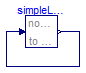

Simple steady state initialization of an FMU, together with a re-initialization of the state at an event, leading to a nonlinear algebraic system of equations during initialization
Information
With this test model the following properties are tested:
- Defining an FMU with incomplete initialization (so this FMU can only be simulated
if additional initialization conditions are defined in the environment where the FMU
is imported).
- In the environment one instance is defined with steady-state initialization
in an initial equation section.
- This FMU leads to a nonlinear algebraic equation over the FMU during initialization.
- At an event instant, the internal state is re-initialized from the environment.
Extends from Modelica.Icons.ExamplesPackage (Icon for packages containing runnable examples).
Package Content
| Name |
Description |
 WithFMUsReference WithFMUsReference
|
Reference solution in pure Modelica using exactly the same structuring as in Model WithFMUs |
| WithFMUs
|
Solution with FMUs |
 FMUModels FMUModels
|
For all models in this package an FMU must be generated |
Reference solution in pure Modelica using exactly the same structuring as in Model WithFMUs

Information
Extends from Modelica.Icons.Example (Icon for runnable examples).
Modelica definition
model WithFMUsReference
"Reference solution in pure Modelica using exactly the same structuring as in Model WithFMUs"
extends Modelica.Icons.Example;
FMUModels.SimpleNonlinearModel simpleLinearReinit;
initial equation
der(simpleLinearReinit.x) = 0;
equation
when sample(0.1, 0.5)
then
reinit(simpleLinearReinit.x, 1);
end when;
connect(simpleLinearReinit.y, simpleLinearReinit.u);
end WithFMUsReference;
Solution with FMUs
Information
Extends from Modelica.Icons.Example (Icon for runnable examples).
Modelica definition
model WithFMUs
"Solution with FMUs"
extends Modelica.Icons.Example;
FMUModels.SimpleNonlinearModel simpleLinearReinit(x(fixed=false));
initial equation
der(simpleLinearReinit.x) = 0;
equation
when sample(0.1, 0.5)
then
reinit(simpleLinearReinit.x, 1);
end when;
connect(simpleLinearReinit.y, simpleLinearReinit.u);
end WithFMUs;
Automatically generated Fri Apr 25 16:23:29 2014.